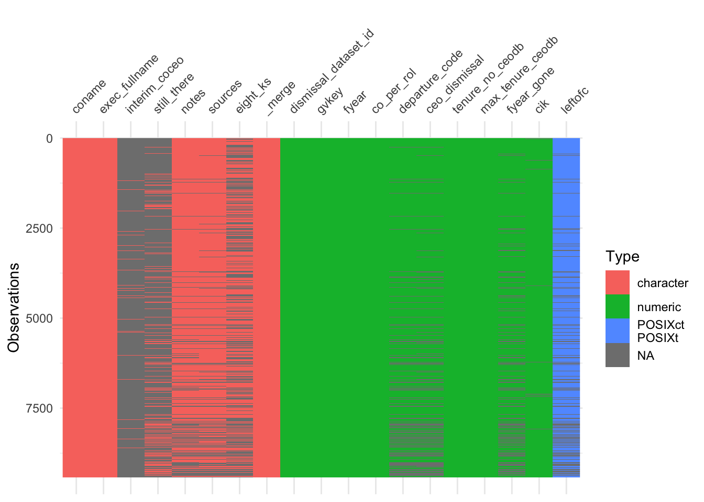
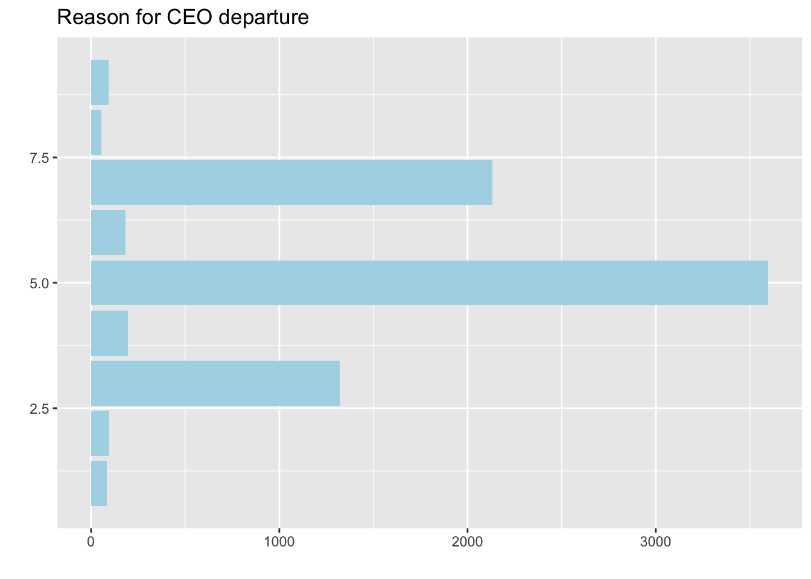
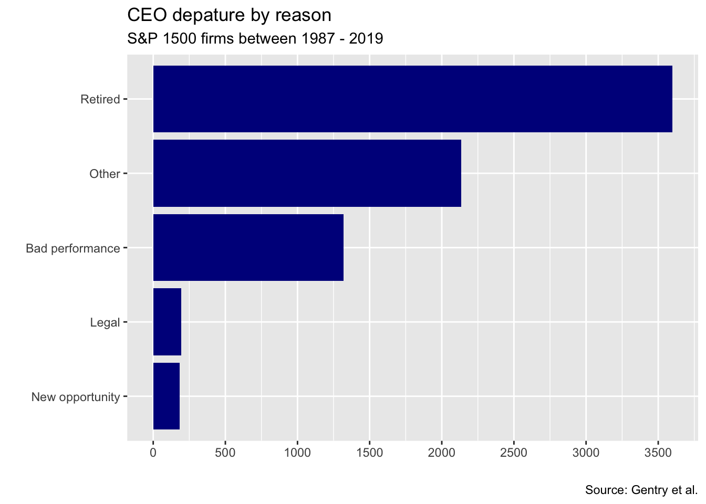
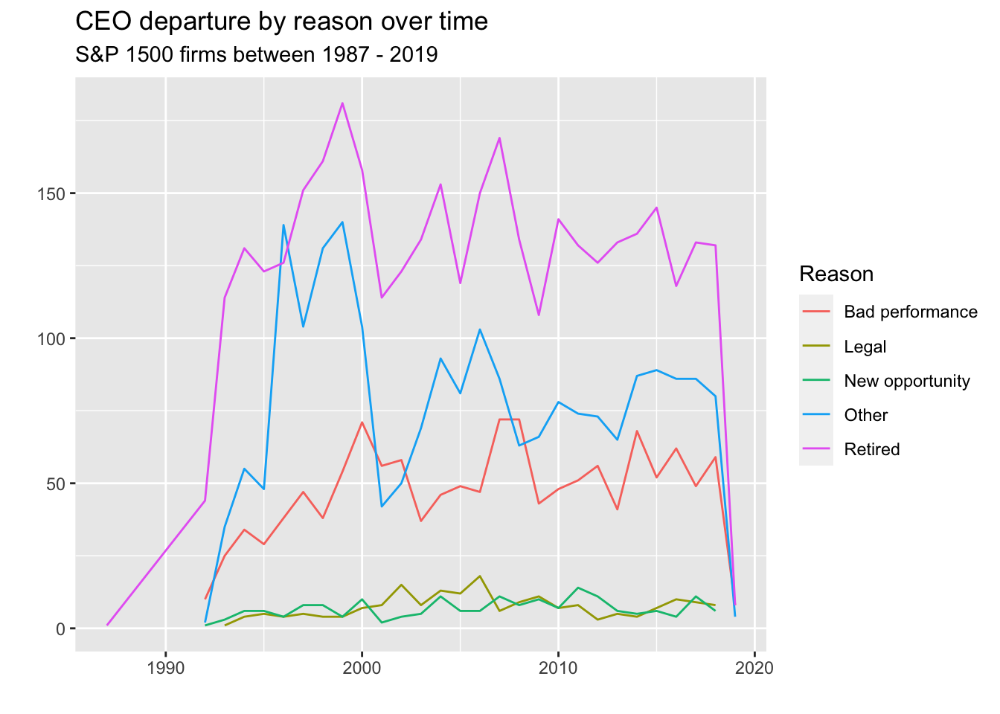
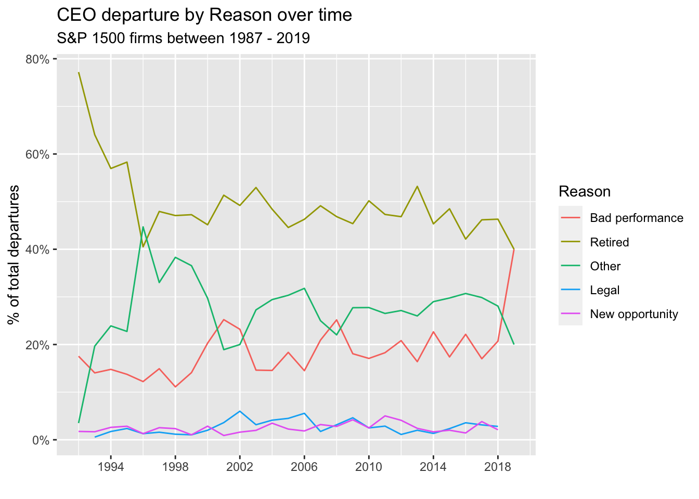

knitr::opts_chunk$set(echo = TRUE,
message = FALSE,
warning = FALSE,
fig.align = "center")Q1
Exercise 1
The blog post by Manuel Rademaker describes a neat analysis of the Tidy Tuesday data on CEO departures. Re-run this analysis for yourself. Report any problems reproducing the results. Your primary task for this exercise is to outline all of the parts of the analysis, and label them as EDA, IDA or confirmatory analysis.
library(ggplot2)
library(tidytuesdayR)
library(tidyverse)
library(visdat)ceo <- read_csv("departures.csv")The data for CEO departures has been sourced from the Tidy Tuesday library. The analysis will be re-run and each section will be classified into one of the following types of analysis:
- Initial Data Analysis ⚠️:
- Exploratory Data Analysis 📊:
- Confirmatory Data Analysis 🎯:
Visualising the various datatypes in each variable
dim(ceo)[1] 9423 19## [1] 9423 20
vis_dat(ceo)
The above plot allows us to understand the various types of datatypes in each of the 20 variables in the dataset. The greyed out sections indicate the presence of null values in the dataset, while the colored sections indicate the corresponding datatype for each variable.
⚠️ Such a type of analysis allows us to understand the distribution of missing values, and the types of datatypes present in the dataset, further laying the path for the data pre-processing techniques to be used in later part of the analysis. Hence, we can classify such an analysis as Initial Data Analysis . ⚠️.
Develop research questions and hypotheses
The following research questions were posed for the current dataset.
- What is the distribution of CEO departure reasons (by year (or every 5 years), overall)?
- Does the distribution change over the years (i.e. are CEOs now more likely to be removed for legal reasons for example)?
- Do CEOs that are fired (3 & 4) get fired again more often than others? Or in general: whats the likelihood of departing for reason x given reason y for dismissal.
- Look at companies and their CEO turnover. Which companies stand out (e.g., because they dismiss many CEOs).
- If possible, look at the history of some interesting CEOs. Maybe there are some that stand out (e.g. because they always left for legal reasons).
🎯 Setting up specific research questions and addressing key strategies to answer such questions generally forms a part of the confirmatory data analysis . 🎯
Reason for CEO departure
{#fig:ceodep}
ggplot(ceo, aes(y = departure_code)) +
geom_bar(fill = "lightblue") +
labs(
title = "Reason for CEO departure",
x = "",
y = ""
)
As figure @ref(fig:ceodep) does not provide much information regarding CEO departures, the following techniques were done to improve the plot.
ceo %>%
group_by(fyear, departure_code) %>%
count()# A tibble: 255 × 3
# Groups: fyear, departure_code [255]
fyear departure_code n
<dbl> <dbl> <int>
1 1987 5 1
2 1992 1 1
3 1992 3 10
4 1992 5 44
5 1992 6 1
6 1992 7 2
7 1993 1 2
8 1993 2 1
9 1993 3 25
10 1993 4 1
# ℹ 245 more rowsceo_reduced <- ceo %>%
filter(departure_code %in% 3:7) %>%
mutate(
departure_label = as.factor(recode(departure_code,
`3` = "Bad performance",
`4` = "Legal",
`5` = "Retired",
`6` = "New opportunity",
`7` = "Other")),
fyear = lubridate::make_date(fyear)) %>%
relocate(fyear, departure_label)⚠️ Until this section, the code chunks majorly dealt with gaining more information from the raw data through data pre-processing. Such activities generally constitute an integral part of initial data analysis . ⚠️ .
ceo_reduced %>%
group_by(departure_label) %>%
count() %>%
ggplot(aes(y = fct_reorder(departure_label, n), x = n)) +
geom_col(fill = "darkblue") +
labs(
title = "CEO depature by reason",
subtitle = "S&P 1500 firms between 1987 - 2019",
x = "",
y = "",
caption = "Source: Gentry et al."
) +
scale_x_continuous(breaks = scales::breaks_width(500))
Reason for departure over time
ceo_reduced %>%
group_by(fyear, departure_label) %>%
count() %>%
ggplot(aes(x = fyear, y = n, color = departure_label)) +
geom_line() +
labs(
title = "CEO departure by reason over time",
subtitle = "S&P 1500 firms between 1987 - 2019",
color = "Reason",
y = "",
x = ""
)
ceo_reduced %>%
filter(fyear != "1987-01-01") %>%
group_by(fyear, departure_label) %>%
count() %>%
group_by(fyear) %>%
mutate(share_fyear = n/sum(n)) %>%
ungroup() %>% # for fct_reorder!
mutate(departure_label = fct_reorder(departure_label, -share_fyear, last)) %>%
ggplot(aes(x = fyear, y = share_fyear, color = departure_label)) +
geom_line() +
labs(
title = "CEO departure by Reason over time",
subtitle = "S&P 1500 firms between 1987 - 2019",
color = "Reason",
x = "",
y = "% of total departures"
) +
scale_y_continuous(labels = scales::label_percent()) +
scale_x_date(
breaks = scales::breaks_width("4 years"),
labels = scales::label_date("%Y")
)
📈 In this section, we observe the use of plots to gain deeper insights for understanding the reasons for departure. The use of lineplots and the subsequent feature engineering done to create the proportion of departures are integral steps done in exploratory data analysis .📊